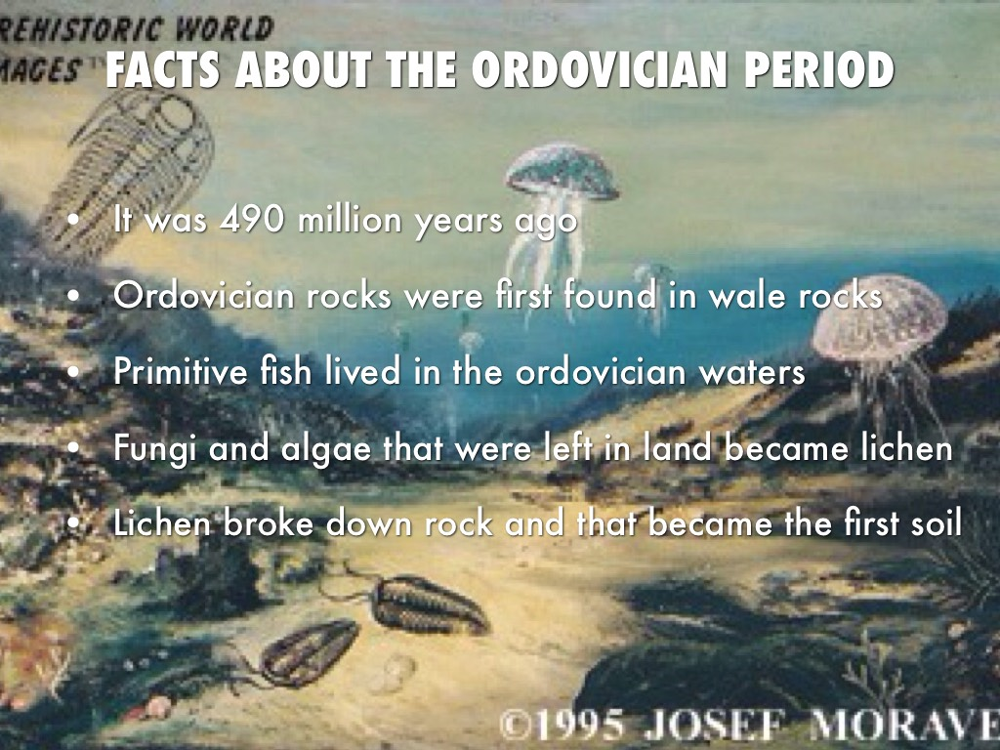

Welcome to
the Ordovician Period
This was the rise of Aquatic Creatures
Home
The Ordovician period lasted 45 million years. It started 488 million years ago and ended 443 million years ago. Many marine invertebrates were diverse and striving at the time. There were reefs which provided habitats to many fauna such as algae. A rich variety of marine life flourished in marine life and the first of flora started to form. This was a nice sight before the second largest extinctions. Their was a supercontinent at the time named Gondwana. During the Ordovician period Gondwana drifted south and rested on the South Pole. Gondwana soon broke up into another supercontinent called Laurentia. Once Gondwana took a polar position, this caused massive glaciers all around the super continent. This started the begining of a 20 million year Ice Age where everthing went to demise. This led into Silurian Period. The extinxtion went into the Silurian period.
Theory
For many years scientists have thought that the cause for the extinction was the climate and cooling of planetary surfaces. This cooling led to glaciers forming, killing plants and animals with chillness. This cold chillness disrupted habitats, biomes, and ecosystems. A new article published about 6 years ago says different. A new theory that has been proven still has debates expresses the opinion that suggest that the source of the extinction has been proven by diatoms being deformed from high levels in the ocean.
This theory states that toxic metals were depleted into our ocean that may have helped figure one of the most mysterious extinctions. High levels of lead,aresenic and iron appear to have caused deadly levels of said metals in plankton and other aquatic creatures. This led them to think that the extinction was caused in changes of oceanic elements. Scientists have figured that if these main 2 theories for the extinction are not the right ones they are highly likely to be a theory or a solution to another mystery.
Quiz
Test YourselfHarder test
Facts
